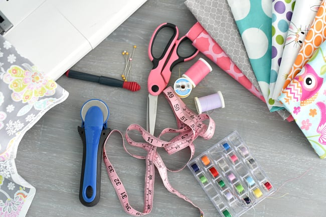

ABOUT ME
A little bit about who I am as a teacher

Hello! My name is Brooke Vozzo and I am an enthusiastic Third-Year Secondary Education University Student eager to contribute my passion for learning and commitment to educational excellence. I have extensive knowledge of the curriculum within a wide range of Technology and applied studies (TAS) subjects, and I am dedicated to fostering a positive and inclusive classroom environment. I possess strong communication skills, adaptability, and a genuine desire to support both students and educators in achieving their goals. I also attempt to help to create a nurturing and productive educational experience for all.
I am studying a double degree at Australian Catholic University, a Bachelor of Secondary education, and Bachelor of Arts (Design and innovate technologies), by the end of my degree being qualified to teach stage 6 Textiles and Design/ Design and Technology, stage 5 in Food Technology and stage 4 mandatory technology.
Teaching has always been a passion for me, teaching my stuffed animals in primary school simple maths equations. As time went on, I expanded to teaching/ coaching 6 year olds Netball during early high school years. During senior highschool, my love for TAs subjects grew and was inspired to apply for early entry TAS teaching, influenced by my Textiles and Food Technology Teachers. I am now almost finished with my degree and am so passionate about sharing my knowledge to my students and collaborating with my peers/ colleagues to constantly learn and foster a welcoming environment.
Units i have completed so far:University Units
EDES100: Understanding Learning and Teaching
EDES101: Educational Thought
TECH105: Design Principles
SCIT101: STEM principles
Year 1, Semester two
EDES103: Understanding Learners and Their Contexts
EDES105: Aboriginal and Torres Strait Islander Knowledges and History
TECH108: Design in Textiles
TECH207: Food and Society
Year 2, Semester one
EDET100: Effective Teaching 1: Becoming a Teacher
TECH208: Textiles Industries
TECH104: Product Design
COMP107: Fundementals of Digital Technologies
Year 2, Winter Unit
UNCC100: Self and Community
Year 2, Semester 2
EDET101: Effective Teaching 2: Curriculum, Planning and Pedagogy
TECH212: Textiles innovation
TECH211: Electromechanical Technologies
EDTE299: Curriculum, Pedagogy and Assessment in Design and Technologies
Year 3, Professional term 5
EFTE399: Curriculum, Pedagogy and Assessment in Design and Technologies
Year 3, Semester 1
TECH306: Product Design Innovation
TECH210: Food And Nutrition
EDFD454: Literacy and Nurmeracy Across the Curriculum
COMP207: Object Oriented Programming Design